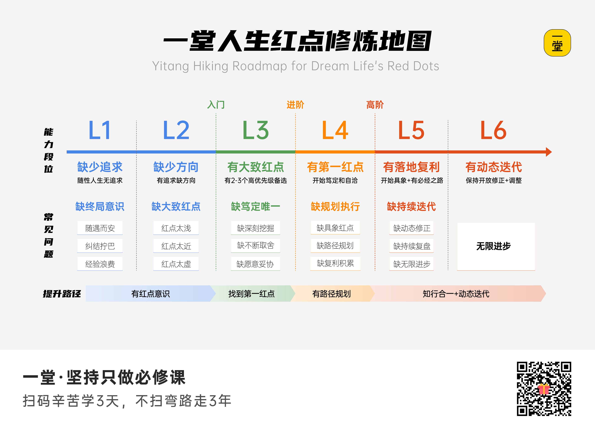

用“是否自洽”和“是否在舒适区”观察当前做事状态。高压而不自洽容易持续自我怀疑；自洽但长期舒适则可能缺少突破。
Yitang 1869 · Study Brief
人生红点认知篇
用一个足够稳定的长期坐标系，让职业、项目、能力和资源朝同一方向复利。方向稳定，路径允许调整。
课程定位
人生红点不是下一份工作的名称，而是一个阶段性终局假设：最想守住的终极选择、主要实现路径，以及需要长期积累的能力与资源。
好红点的三个条件
足够远大以产生自驱，足够抽象以保持稳定，足够务实以形成路径。

餐巾纸诊断与三层模型
先列出赚钱、成就、作品、出名、生活、体验、过程、内心、高手等候选，再通过历史选择、高低峰体验、羡慕对象和未来画面排序。目的不是永久贴标签，而是在冲突时识别 Top 1。
把战略、ROI、路径设计和假设验证迁移到人生决策，形成能持续校准的长期坐标系。
用结果/过程与现实/理想提高讨论完整度。真正的问题是：为了第一红点，什么可以妥协到合理底线？
笃定、自驱、自我闭环。口头愿景不是证据，关键选择、持续投入和结果循环才是。
三次跃迁，六项修养
- 勇敢追求终局：允许终局远大，也允许早期表达保持抽象。
- 笃定红点 ROI：用调研、访谈、对标与真实体验，换几十年更高的选择效率。
- 善于深挖红点：从表层职业偏好下钻到反复出现的稳定渴望。
- 敢于不断取舍：明确 Top 1 与底线，不在所有方向平均用力。
- 努力规划路径：连接能力、资源、进步方式、里程碑和红点。
- 持续动态调整：终局相对稳定，越靠近当下的计划越要随证据更新。
个人五步法
能力 → 资源 → 进步方式 → 里程碑 → 人生红点。先保持方向一致，再优化每一阶段的具体方法。
修炼地图

| 段位 | 状态 | 主要缺口 |
|---|---|---|
| L1 | 缺少追求 | 缺终局意识 |
| L2 | 缺少方向 | 红点太浅、太近或太虚 |
| L3 | 有大致红点 | 缺深挖、取舍与自洽 |
| L4 | 有第一红点 | 缺路径规划与复利积累 |
| L5 | 有落地复利 | 缺动态修正和持续复盘 |
| L6 | 动态迭代 | 保持开放、修正与无限进步 |
对 Junxian 的应用假设
结合 Forward-Deployed AI Engineer、视觉/多模态 AI、部署与评估闭环背景，一个值得验证的红点组合是：作品型 × 高手型，兼顾成就型。
可能路径是：先把工程交付与评估能力做深，再升级为能连接客户、产品和商业闭环的 AI 解决方案负责人，最终沉淀可复用的 AI 产品、行业方案和决策系统。
四个关键问题
- 顶级技术、长期作品、显著商业成就三者只能保留一项时，哪项最不可放弃？
- 过去的高峰体验主要来自攻克技术、产品被使用，还是帮助别人做出更好决策？
- 个人主页、Business Tutor 与 AI 工程项目，是否能沉淀为一条主线上的不同资产？
- 未来三年哪项能力最值得复利：多模态工程、AI 产品客户能力，还是知识产品影响力？
Business Tutor 的新增规则
高风险职业、创业和长期项目决策，在常规 ROI 画布前增加“红点一致性检查”：
- 这是局部效率问题，还是会改变长期路径的战略选择？
- 该选项服务哪个终局，积累什么可复利资产？
- 短期高收益是否会把用户锁进难以回退的相反路径？
- 发生冲突时，什么不能妥协，什么只需守住底线？
- 什么证据出现时需要调整红点、路径或里程碑？
Agent 只负责澄清、推演和标记假设，不替用户决定红点，也不把阶段性答案固化为人格标签。
课后作业与 Candy
作业二选一：写《我的人生红点》，完成候选排序、Top 1、目标路径资源与 ROI 推演；或从课程中选择 1–3 个最有体感的模型写个人收获。
2026-07-11 已完成脱敏作业提交，NPS 为 9，并选择“不愿意公开”。
Candy 状态
《人生红点精选集》已解锁并完成代表性案例学习。本地只保存方法归纳和匿名化模式，不保存个人案例全文。
学习资料：课程 Markdown · 作业草稿 · Candy 与 AI 教练评估